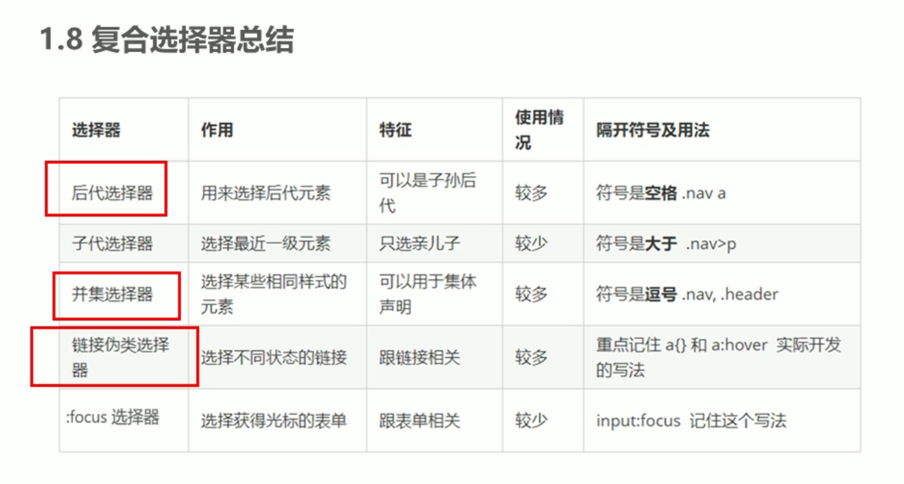

什么时复合选择器
在css中，可以根据选择器类型，把选择器分为，基础选择器和复合选择器，复合选择器是建立在基础选择器之上，对基础选择器组合形成的
1.复合选择器可以更精准、高效的选择目标元素（标签）
2.复合选择器是由两个或者多个基础选择器通过不同方式组合而成的
3.常用的复合选择器包括：后代选择器、子选择器、并集选择器、伪类选择器等
后带选择器（重要）
后代选择器又成为包含选择器，可以选择父元素里面的子元素。
语法：
父元素 子元素{
样式声明
}
例如：
- 我是ol的子级
- 我是ol的子级
- 我是ol的子级
css代码：
ul li {/* 后代选择器 */
color: #FF0000;
}
ul li a {/* 后代选择器 */
color: #FFFF7F;
}
ol li{
color: blue;
}
.rod li a {/* 类选择器 */
color: #00FFFF;
}
子选择器（重要）
语法：
元素1>元素2{样式声明}
例如：
div>a{样式声明}/* 选择div里面所有最近一级的a标签元素 */
div>a {/* 子选择器 */
color: #ffaa00;
}
元素2必须是亲儿子，其亲儿子下所有的类都不管。
并集选择器（重要）
并集选择器可以选择多组标签，并且可以为他们定义相同的样式。
并集选择器是各种选择器通过英文逗号（,）连接形成，任何选择器都可以作为并集选择器的一部分。
语法：
元素1,元素2{声明样式}
例如：
div,p{样式声明}
或者：
div,p,.ptt（类选择器）{样式声明}
案列：把熊大熊二小猪一家改为粉色
熊大
熊二
光头强
css语法
/* 并集选择器 */
div,p,.ttp{/* 跟后代选择器颜色冲突，懒得改 */
color: pink;
}
链接伪类选择器
a:link 设置a对象在未被访问前的样式表属性
a:visited 设置a对象在其链接地址已被访问过时的样式表属性
a:hover 设置对象在其鼠标悬停时的样式表属性
a:active 设置对象在被用户激活（在鼠标点击与释放之间发生的事件）时的样式表属性
注意：为了确保生效，需要按照LVHA顺序声明
语法
a:hover{
color: #DEB887;
}
focus伪类选择器（表单）
focus伪类选择器用于获取焦点的表单元素
焦点就是光标，一般情况input类表单元素才能获取，因此整个选择器主要针对input表单元素、
语法：
input:focus{声明样式}
如：
